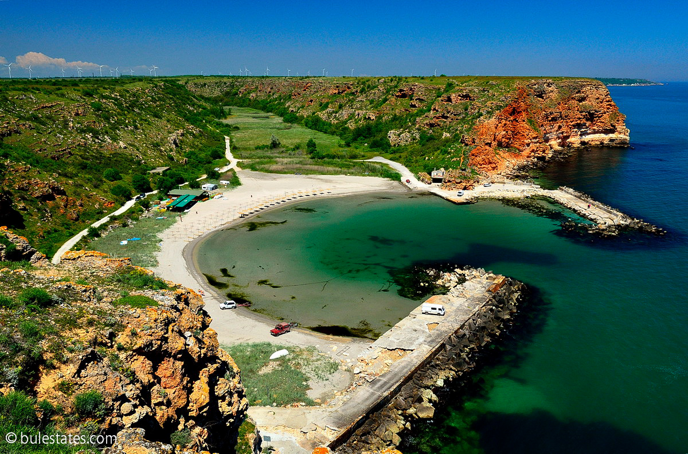

<div class="">
    <div class="">
        <div class="">
            
            <h3>NAME</h3>
            <p> DESCRIPTION</p>
            </img>
             <div> name:"Болата",
                   country: "Bulgaria",
                   location: "село Българево, област Добрич",
                   cathegory:"beaches",
                   description: "Болата е малък, но изключително красив плаж. Той е тихо, спокойно, сгушено сред високи скали и множество пещери райско кътче, сякаш скрито от света. Това закътано местенце представлява лиман и тясна клисура, която е врязана в брега и опиянява мнозина с очарованието си. Болата се намира не далеч от нос Калиакра и в близост до град Каварна. Болата е известен като единствения резерват "
        </div>
    </div>
</div>
